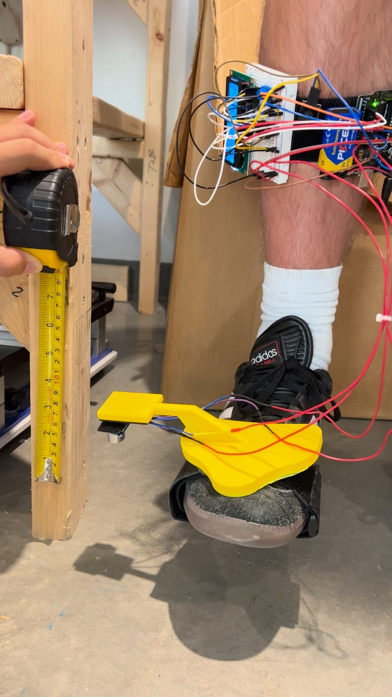

Technical Project
BuzzStep
A wearable rehabilitation device that gives patients real-time feedback on foot clearance, with no physical hurdles to trip over.
Overview
BuzzStep is a wearable gait rehabilitation device that replaces physical hurdles with sensor-based virtual targets. We built it for the Medical Robotics club to address tripping hazards and foot imbalances that occur when walking and during the stages of rehabilitation. The user sets a target clearance height and then walks. When the foot reaches that height, the device beeps.
- Club
- Medical Robotics
- Timeline
- Spring 2026
- Team
- Team of 4
- My Role
- Team Lead
- Tools
- Arduino, ultrasonic sensor, potentiometer, speaker, breadboard, LCD

The Problem
Drop foot limits a patient's ability to lift the front of the foot, which increases fall risk and impairs gait. Existing rehabilitation methods fall short in three ways: physical obstacles create tripping hazards, they offer no quantitative measurement of foot clearance, and patients receive little real-time feedback.
The Process
Our first design sketch placed an Arduino and a breadboard on the calf, secured with Velcro and wired to a device containing an ultrasonic sensor that clipped onto the shoe. We then modeled the design in 3D and built a prototype worn on the shoe.
We needed to design a support that holds the sensor parallel to the ground, because the sensor can only measure height when it detects the signal it emits, which happens only when the signal strikes the surface perpendicularly. As we continued testing, we calibrated the knob so that it was neither too sensitive nor too unresponsive, allowing the height to be adjusted to the exact measurement the user wants.
The Outcome
In the end, we built a working prototype of BuzzStep, a wearable device that replaces physical hurdles with sensor-based virtual targets. The sensor is very sensitive to the angle of projection, which strongly affects the accuracy of the reading when the foot is lifted. The curved shape of the foot makes it hard to keep the sensor parallel to the ground, so in a future version we would design a better attachment point that sits more parallel to the ground to improve accuracy.
What I Learned
Taking BuzzStep from idea to working prototype in a matter of months taught me how to carry a project from start to finish, a skill I can apply to assigned projects in industry. I also deepened my knowledge of sensors and learned how much a microcontroller can do, which has broadened my sense of what is possible when developing new ideas.